The HorrorStudio Director is a Godot plugin. The scene is the world: drag in rooms, doors and characters,
and make your own models into things with parts (a kettle, a letter, a hiding place). The story is one
file beside it, written in a page, the Director Manager: quests one at a time, moments, conversations, states
and endings, naming the scene's things by id. Press F5: the Director watches what the player does and
sets the world to match, on the studio's own runtime (the walking, the clicking, the inventory, the flashlight,
hiding, the HUD, the pause menu, the saves).
Godot 4.7GDScriptparts on your own modelsquests one at a timethe Director Managerfacts and conditionsKimodo motions
1Start a project
From the studio's folder, make a new Godot project with everything in it. --sample starts you from the
sample house (a hall, a kitchen, a locked bedroom, a letter, a key, a kettle, Mari, a jumpscare and two endings);
leave it out for an empty game with one room.
python tools/godot_director.py new ~/Games/MyGame --sample
Open the folder in Godot 4.7 (Import in the project manager, pick its
project.godot). Both plugins are already switched on. Press F5 and you're playing.
main.tscn
The world: an HSGame with the levels under it. F5 plays it.
director/
The story: director.json, the Director file (§6), and history/, the versions before each save.
addons/
The Director, the runtime (horrorstudio) and the look (horrorstudio_look). Don't edit them here: they're copies.
game/
The sound shelf (240 sounds by name), the little things' lives, and the Character Studio exports your characters wear (people/).
kimodo/, motions/, bodies/
Kimodo's stages and motions, the motions brought in, MHR's body to try them on.
guide/
This guide, also opened by the dock's Guide button.
Already have a Godot project? Put the add-ons into it (again after every pull of the studio: they're copies):
Tip.install ... --link makes the add-ons links into the studio's folder instead of
copies, so a pull reaches the project straight away. Both commands are also in the launcher (./studio, the
Godot section).
2The editor and the dock
The sample in Godot's editor: the house's rooms, doors, things and characters in the scene tree, the
Inspector on the kettle, the HorrorStudio dock under it on its Director tab.
Everything in the world is a node in the scene tree: rooms, doors, things, characters, areas, spots, paths. You add
them three ways: the dock's Add tab (a click puts one in front of the camera, a drag drops it
into the 3D view), a part on your own model (§4), or Godot's own Add Child Node (search
for "HS"). Select a node and the Inspector shows its settings, only the ones that matter for what it is.
What happens in the game isn't in the scene: it's the Director file (§6), written in the Director Manager
(§9). The dock sits under the Inspector, so a row you pick in it opens right above it. Its tabs:
Director
The story as the Director file has it: the quests in play order with their steps and what comes next, the endings, the conversations, the moments, the states. ▶ plays, ▶ Here plays from the picked quest, Manager opens the page that writes it.
Things
The items, notes, things to use, characters, rooms, areas, doors, spots, paths and lights, with their ids.
Add
The parts first (select your model, click what it is), then every node as a button: click or drag.
Check
The game compiled as it will play, and what's wrong.
Kimodo
Send a room to Kimodo, bring a motion back.
Under the tabs: a line saying what just happened (or what's missing), and the Guide button,
which opens this page (so does Project → Tools → HorrorStudio Director guide).
Rooms, doors, things, characters, areas, spots and paths each have an id (the Inspector's
first field): it's how the story names them. It's the node's name in lowercase with underscores
(BedroomKey is bedroom_key) and follows the name when you rename the node, until you type an
id of your own. Each time you save a scene the plugin writes down its ids, for the Manager's pickers.
The Add tab: the parts on top; hover a button for what it makes.The Things tab: everything in the scene by kind, with the id the story calls it by.
Tip. Drag the dock's edge to make it wider; the rows read whole at about 600 pixels.
3Build a level
The sample house from above (ceilings off): the hall with Mari, the kitchen through its door (the orange box
is an area: a moment waits for the player to walk into it), the bedroom behind a locked door.
A level is an HSLevel: a place the game plays in. Build it under the HSGame, or as its own
scene (its root an HSLevel) dropped into main.tscn. The story plays where the player is: a new level is
only for a new map (the player drives somewhere else). Inside it:
Rooms
An HSRoom makes a floor, four walls and a ceiling from its size (the space inside:
width, height, depth). Its origin is the middle of the floor; north is Godot's −Z. Turn walls off with walls,
give it your own materials (in a StandardMaterial3D tick UV1 → Triplanar and
World Triplanar, so a texture tiles by the metre whatever the room's size), and set its
floor kind (wood, stone, tile, carpet, dirt, metal, water) for the footsteps. Its id is an area: a step
or a moment can wait for "the player enters kitchen".
Two rooms side by side: set them a wall's thickness apart (12 cm unless you change wall) and turn off one
room's wall where they meet, so the wall isn't doubled. In the sample the hall keeps its east wall, the kitchen has
none on its west, and the kitchen's door sits in the hall's wall.
Doors
An HSDoor on a room's wall cuts its own opening: drag it along the wall and the hole
follows. It swings away from the player. Locked by an item's id keeps it shut until the player has that item (or
flag:name, a fact). It can have a peephole and a latch (a thumb turn to lock it from inside).
Put a door model in as its child and it wears that instead of the plain leaf.
Doorways and windows with no door are the room's openings: a side, an offset along the wall, a width, a
height and a sill.
A room in the Inspector.A door: locked by bedroom_key, with a latch.
Areas, spots and paths
HSTrigger, an area: a box the player walks into (orange in the editor, invisible in the game). A step or a moment waits for it by its id. Safe: a watching character can't see the player inside.
HSSpot, a spot: where the player starts (the level's start, or a spot named Start), where a quest puts the player, where a character stands or is sent. It faces the way its arrow points (its +Z).
HSPath, a path a character walks: select it and draw points with Godot's path tools (Add Point, then click the floor), or give it HSSpot children you drag around. Mode: loop, there and back, or once; waits at its points.
Your own models and lights
Drop any model into the level. If it has collision it stops the player (Godot's own physics); if you want the player
to do something with it, give it a part (next section). Every OmniLight3D and SpotLight3D in a level
belongs to the story by its node's name: light switches flip the lights in their room, a power cut turns them off, a
state or a moment's Light finds them. A light with "candle" or "fire" in its name keeps burning in a power cut.
Light the level however you like; the look plugin's light nodes work as usual.
The hall in the game: the first quest's objective and its steps at the top left, Mari waiting.
4Things to use: parts
Any model can be something the player does something with. Select your model in the scene and click what it
is in the Add tab's first rows (Pickup, Inspect, Note, Seat, HidingPlace, CodeLock...), or drag the part from
the plugin's parts/ folder onto your model in the Scene tree. The part takes your model's place and your
model goes inside it: it's a thing now, an HSThing, with an id. Ctrl+Z
undoes it. A thing's use says what the player does with it, and the Inspector shows only that use's fields;
give it a display name for the cursor ("Read · Letter").
A note: a title and the words.In the game, the cursor says what a click will do.
Use
What the player does, and what to fill in
pickup
Takes it into the inventory. item is its id (a locked door or a quest's step asks for it). Tick flashlight and F switches it.
note
Reads it on a card: note title, note text.
inspect
Takes it up in the hands: the thing itself in front of the eye, turned by dragging the mouse, its inspect text under it; Esc, E or a click puts it back. Something big (a bookshelf) stays where it is and shows its words on a card.
switch
A light switch: the lights in its room, or the ones in switches.
breaker
The power: off for the whole level, and back on.
sit
Sits down; a click stands up again.
sleep
Lies down, the view goes dark. sleep needs: facts that must be there first.
hide
Climbs in (a wardrobe, a locker); a watching character can't see them. see through: how much they see out.
carry
Carries it in both hands; G puts it down.
roll
Throws it like a die; the face it lands on is heard.
code
A keypad: the right code sets its fact (opens flag).
use_item
Uses an item on it (needs item), which sets its fact; consume takes the item away.
clean
A stain scrubbed away by holding the button; clean with an item (a mop).
game
A board game at a table (board game): chohan (two dice, odd or even) so far; a game's own are made as it needs them.
life
A little thing with a life of its own (below).
none
Nothing to do: a solid thing the story can name (shown, hidden).
Hidden at start keeps a thing out of the level until the story shows it (a state, or a moment's Show): the
key that turns up later, the figure for a jumpscare. Solidity says whether it stops the player (furniture does by
default; a key or a note doesn't). Until you put a model in, a thing shows a stand-in box.
A note, read.
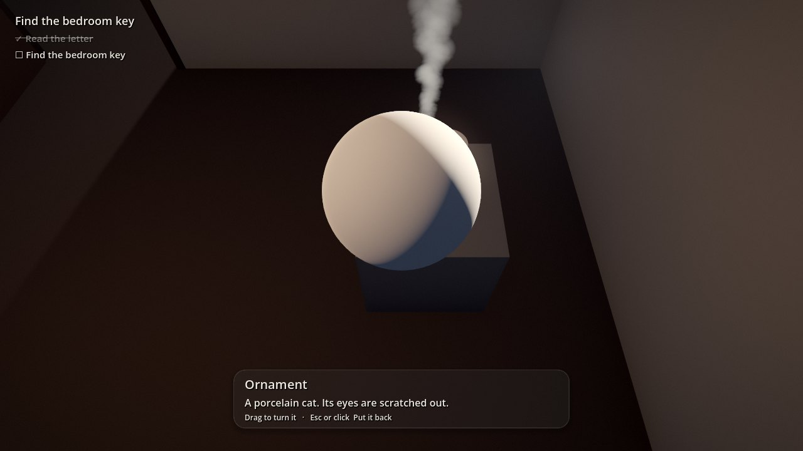
Inspect: the ornament in the hands, turned by a drag, its words under it.
The little things
Kettle, Cup, Teapot, Pot, Hob, Candle, Cigarette, Lighter, Phone, Tap, TV, Clock, Fridge and more: parts too, with a
life of their own. A kettle boils by itself once switched on, a cup goes cold, a candle burns down; a click does what
it offers now (switch it on, pour, answer). Each comes with its effect points as markers (a kettle's
spout, led, lid and switch; a cigarette's tip; a
candle's flame), placed where they'd be on a thing of its size. Drag them onto your model: the steam comes out
where you put the spout. life state is how it starts; the story can change it (a state, or a moment's
State).
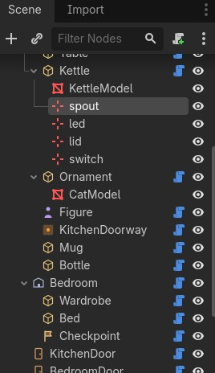
A Kettle part on a model: its effect points are markers in the tree.
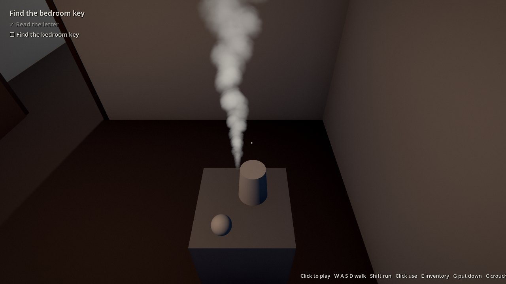
In the game: switched on and boiling, the steam from where the spout marker was put.
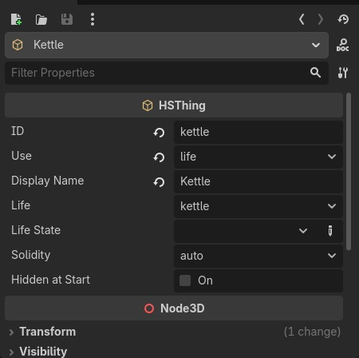
A little thing in the Inspector: which life, and the state it starts in.
5Characters
Mari in the Inspector.In the game: Talk on the cursor.
An HSActor is a character. Put her model in as a child: a Character Studio export
(Content/Studio/People/<name>/export/<name>.glb, copied into the project) or any rigged model.
Without one a stand-in figure shows. She faces her +Z.
Or leave her empty and type the character's name in studio character: the game dresses her in that export
with the Character Studio's own skin and eyes. install copies the export into the project
(game/people/), so run it again after you set one. Kimodo motions need the model child, since they go onto
its skeleton.
Behaviour: how she starts: idle (stands where you put her), sit (on a seat), path (walks an HSPath), patrol (several paths in turn), or off (not there until the story brings her). Face player turns her to them. Later the story's states move her (§8).
Sees player: she watches; in her cone and range the suspicion meter fills, and when it's full the player is caught (a step or a moment can wait for it).
Talk: someone the Director file has conversations for takes a click whether this is ticked or not (the cursor says Talk) and plays the one the story offers now (§8); tick it for a click with no conversation behind it.
Idle motion, walk motion: animations on her AnimationPlayer (a Kimodo motion you brought in, §11).
Expression: the face she rests in, a loop from the studio's expression library (the desk's Expressions tab).
install brings the library into the project's faces/ (the loops in faces/loops/);
the story puts other faces on her (a line's face, a state's, a moment's A face on someone). Her
model needs MHR's face shapes: the plain MHR body has them; a Character Studio export doesn't yet.
Hidden at start keeps her out of the level until the story shows her; solid off lets the player walk
through her; speed is her walking pace.
6The story: the Director file
The scene is the world; the Director file is the story. It's one file, director/director.json,
and nothing in the scene knows about it: the story names the scene's things by id ("when the player picks up
bedroom_key", "Mari walks to bedroom_spot"). You write it in the Director Manager (§9); the
dock's Director tab shows it as it will play, and the game reads it each time it starts.
Night 1 · 23:40→The key→A drink→Mari→The bedroom→Something in the hall→MorningorAsleep
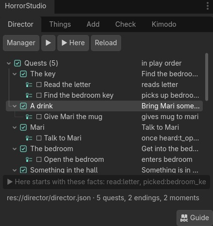
The Director tab on the sample: its five quests, their steps and what comes next.
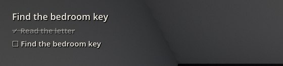
A step done stays on the list, crossed out.
Quests, one at a time
The game is its quests, played one after another, in order. A quest has a title, an objective (top left)
and steps: the to-do list under it, each done by something the player does (reads the letter, picks up the key,
walks into the bedroom, hides in the wardrobe) and maybe failed by another (takes too long, gives the wrong thing).
A step only counts while its quest is on. "Turn the light on, then off": if they did it before that quest
started, it doesn't tick by itself; they do it again. (For what was done before, ask a fact instead, §7.)
A step done stays on the list, crossed out with a line (a failed one in red).
A quest finishes when all its steps are done, on its first step done (the night: hide or sleep,
whichever they do), or never by itself (a moment says when).
As it starts: a chapter card before it if you like (a title, the time, the view dark, an autosave), where the
player starts at, a checkpoint, a time limit and what happens when it runs out, and commands to run
(as it starts, when it's done).
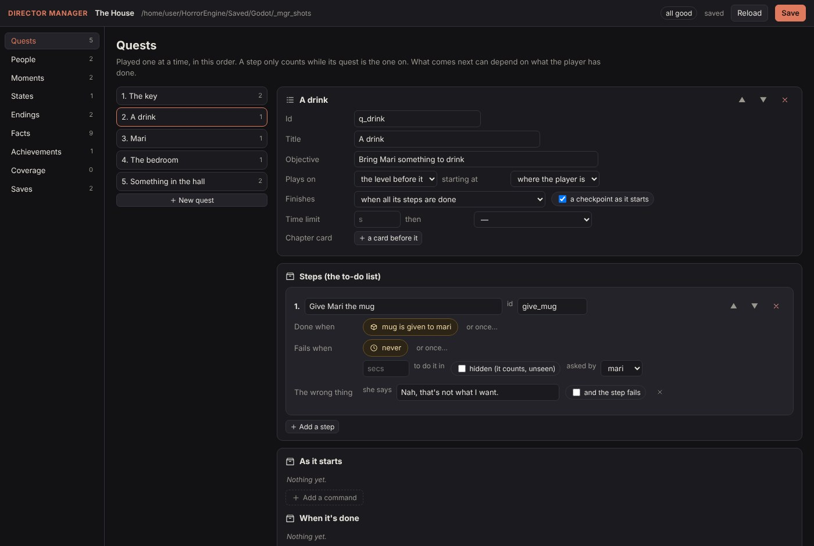
The Director Manager on the quest A drink: one step, done when the mug is given to Mari.
Giving something to someone
A step can wait for the player to give something to someone (Something is given to
someone: the mug to Mari). While that step is on, clicking her with something in the hand offers it to her
instead of talking. The right thing ticks the step and she takes it; for anything else, the wrong thing: her
answer ("Nah, that's not what I want."), and the step can fail too if you tick it.
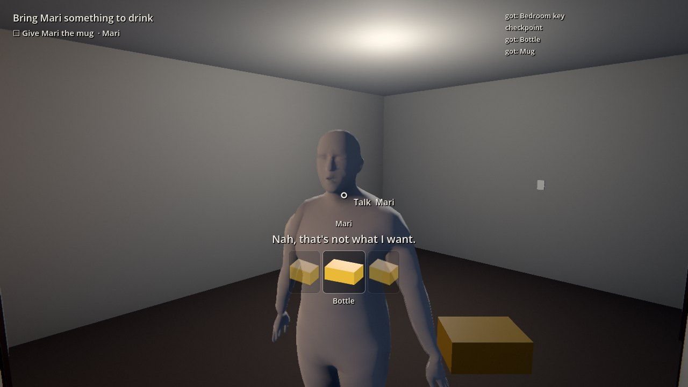
The bottle offered: not what she asked for.
What comes next
When a quest is done, the next one in the list starts, unless it has ways: each a condition (§7) and where it
goes, a quest or an ending; the first that holds wins. That's how the story branches, and how a secret ending or
an easter egg waits for what the player did along the way.
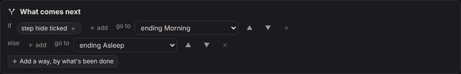
The night's ways: hidden, the good ending; else the bad one.An ending's card.
An ending is a title and its words, and a kind: good, bad, neutral, secret, or a death, which offers
a retry from the last checkpoint.
7Facts, conditions, achievements
As the player plays, the Director writes down what they've done as facts. You never declare one: they're
kept with the run (a save keeps them), and anything in the story can ask for them.
Fact
Written when the player...
used:kettle
uses a thing (clicks it, whatever it does)
picked:bedroom_key
picks up an item
read:letter
reads a note
entered:kitchen, left:kitchen
walks into, or out of, a room or an area
talked:t_open, heard:t_open
begins a conversation; hears it out
answered:t_open:yes
picks an answer
gave:mug:mari
gives something to someone
step:find_key, failed:give_mug
ticks a step; fails one
done:q_key, ending:e_morning
finishes a quest; reaches an ending
caught:mari, dropped:mug
is caught by someone watching; puts something down
promised
your own: an answer's sets, a moment's Set flag, a code lock's opens flag
A condition asks about them. It's one or more of: a fact (or not a fact), a quest that's on
now, a quest done, a step ticked, an item held, a counter, karma, an ending reached; all of them,
or any one. Conditions are everywhere the story decides something: a quest's ways, a moment's if, a
conversation's offered when, a line's said, an answer's offered, a state's while, an
achievement's when. "If they read the letter and haven't opened the bedroom yet" is
read:letter and not done:q_bedroom.
F9 in the game: the quest on and the facts so far.
Achievements
An achievement is unlocked when its condition holds, and kept as the fact achievement:<id>.
Its id is the name Steam will know it by; its hint shows before it's unlocked unless it's hidden.
Criteria can be anything a condition asks, including facts the player never sees as quests (name your own in the
Manager's Facts, ticked hidden). The games are made ready for Steam now; Steam itself (GodotSteam) comes later.
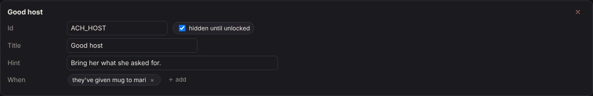
The sample's achievement: the mug given to Mari.
8Moments, conversations, states
Moments: when, if, then
A moment is how you make things happen: jumpscares, thoughts, sounds, lights, doors, someone arriving. It
reads as a sentence:
When the player enters the kitchen's doorway, if they've read the letter, then
the figure shows for a second, they think "What was that?", and saw_figure is set.
When: anything that happens (the player enters, picks up, uses, reads, looks at, hides, is caught; a step is
ticked; a door is locked; the power goes...), picked from the same palette as the desk's; or or
once…: the moment a condition becomes true.
If: a condition (§7). Only during: quests (none: the whole game). Once a playthrough, or every time.
Then: the commands, the desk's own: a jumpscare, a glimpse, a knock, the lights dying, a door slamming
behind, a thought, a sound, music, show or hide something, a door, a light, the power, a little thing's state, a
character sent somewhere, a fact set, an item given or taken, karma, a counter...
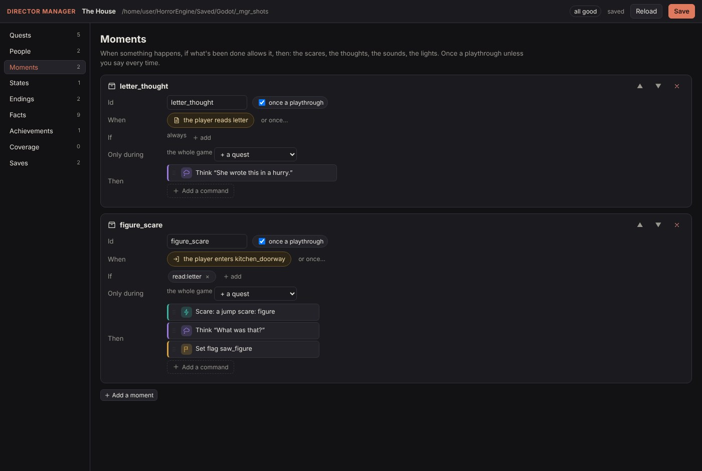
The sample's two moments in the Manager.In the game: the figure (here a stand-in; put your model in it).
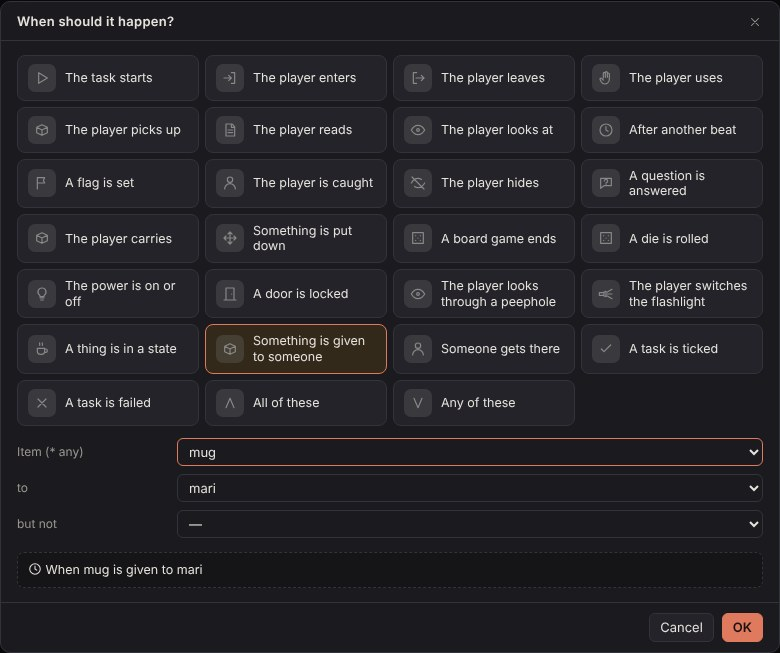
Picking when: the palette, then its form (here: the mug, given to Mari).
Conversations
Each person has her conversations, in order. Clicking her plays the first whose offered when holds,
so she says what fits where the story is: "Not now. Find the key." before the key, "Could you bring me something to
drink?" during the errand, her question after it. A once only conversation goes once it's been heard out. It
plays live: the player can look around while she talks.
Its lines in order: who says it (her, someone else, or the player's thought) and the words; a line can be
said only if a condition holds, wear her face as she says it (an expression, played once over the face
she rests in), and run commands as it starts. A line with answers is a question (two
at most): each answer's label, when it's offered, the facts it sets, karma, her reply, and
then: the conversation goes on, or the story goes to a quest or an ending (a wrong answer's death). Answers are
never timed: the player must choose.
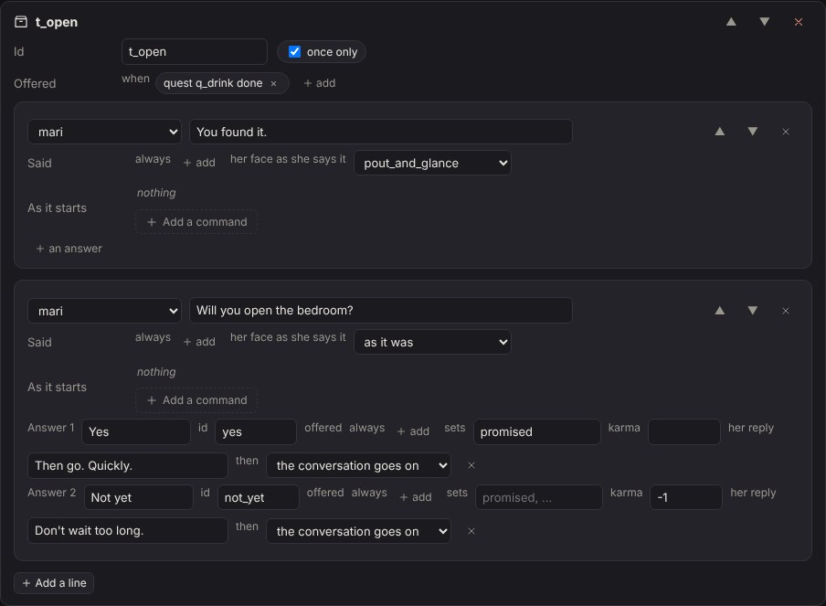
Mari's question, its two answers and her replies.In the game: pick with A/D and Enter, or the mouse.
States: what the world looks like
A state says what the world looks like while a condition holds: a person's face (the expression she
rests in), at a spot, what she does (stands, sits, walks to a spot, walks a path, patrols), whether she's watching for the player, her motion, seen
or not; a thing shown or hidden; a little thing's state; a door locked or open; a light on, off, flickering or dim.
The Director works the states out again after every change and every level entered (a load, a retry), so the world
always matches the story; a later state's settings win over an earlier one's. In the sample, once Mari's been talked
to, she walks to the bedroom door.
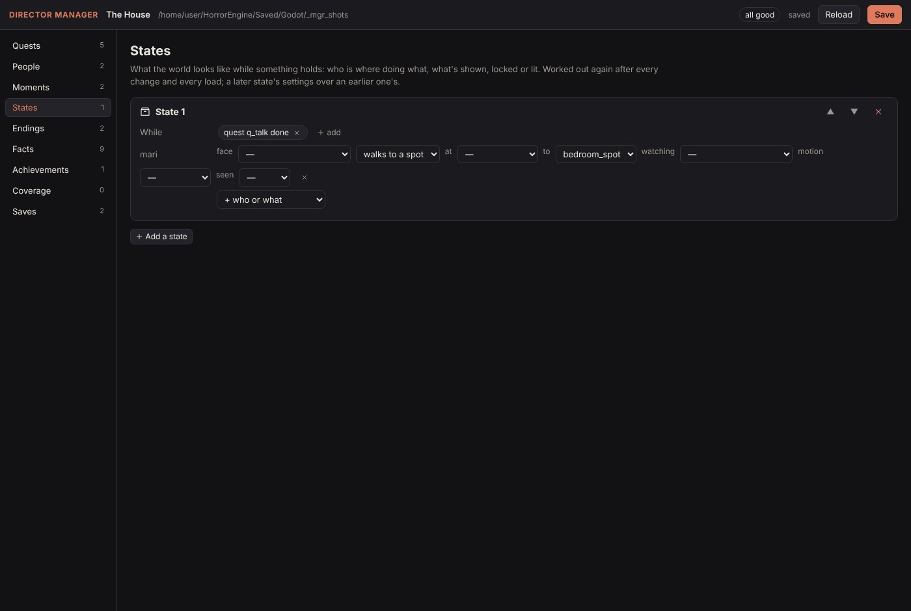
The sample's state: Mari sent to the bedroom door once her quest is done.
9The Director Manager
The page that writes the Director file. Open it from the dock's Director tab (Manager: it
starts the page on this project and opens it in your browser, at http://127.0.0.1:8796), from the
launcher's Godot section, or by hand:
The quests in play order (▲ ▼ to reorder), each with its steps, how it finishes, its card, what runs as it starts and when it's done, and what comes next.
People
Each character's conversations, and her states.
Moments
When, if, then.
States
While, and what's set: who, what, which door, which light.
Endings
Each ending's kind, title and words.
Facts
Every fact the story asks for: where it's asked, what sets it (warned if nothing does), a note, hidden.
Achievements
The Steam name, the title, the hint, hidden, when.
Coverage
What's wrong, and what the scene has that the story never uses.
Saves
The game's saves, and where the next play starts.
Save (Ctrl+S) writes director/director.json and keeps the
version before it in director/history/ (the last 50). The game reads the file each time it starts, so
press F5 in Godot and it plays what you saved. The pickers list the scene's ids as Godot last saved them: save
the scene in Godot after adding things, then Reload here. Commands and triggers are picked and
filled in exactly as on the desk.
Coverage: what's missing
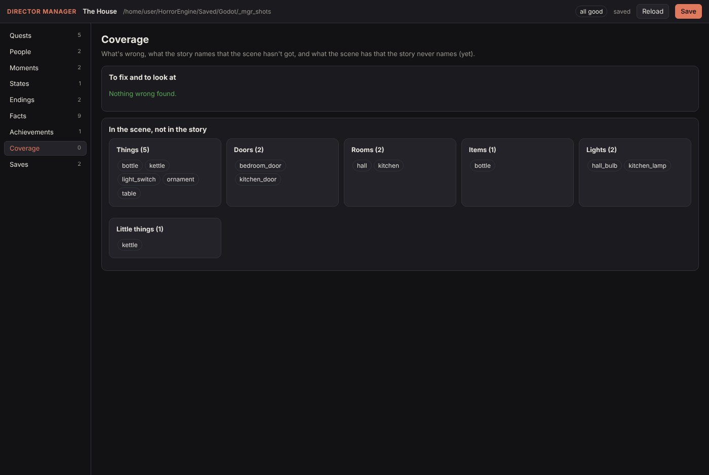
Coverage on the sample: nothing wrong, and what in the scene the story doesn't use yet.
Coverage lists what won't play right (a quest that never finishes, a way that goes nowhere, a moment with no
when, a quest or an ending nothing leads to, a fact asked for that nothing sets), what the story names that the
scene hasn't got (a typo, or something still to build), and what the scene has that the story never names, by
kind: the doors no state locks, the things no step asks for. A good list of what's still to do.
Saves and where the next play starts
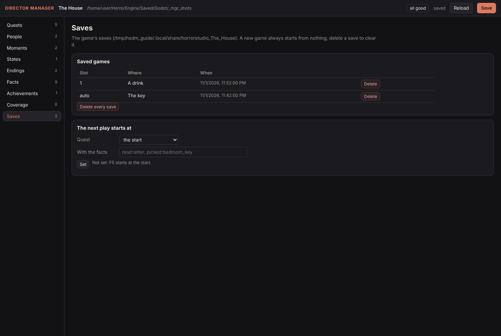
The game's saves, and the next play's start.
A new game always starts from nothing; delete a save here to clear it (one, or all of them). The next play
starts at sets where the next F5 begins, once: a quest, with the facts it should have (what the quests
before it would have set), as the dock's ▶ Here does.
10Play and test
F5
Plays the game from the start (or, once, from where the Manager set the next play).
▶ Here
(the Director tab) plays from the picked quest. Type the facts it should start with in the box under the list (what earlier quests would have set); the quests before it count as done.
F6
On a level's own scene: that level alone, free to walk around, with the story's moments, conversations and states. Good for testing a level before the quests are there.
Check
The game compiled as it will play. ✕ won't play right (a quest that never ends, a way that goes nowhere); ⚠ is worth a look (a quest nothing leads to, a name the scene hasn't got). Click a line to go to its node.
lighting: off
(on the HSGame) a flat test light, for playing before you've lit the level.
The Check tab on the sample.
While the game runs from the editor, the Director tab follows it: ▶ on the quest it's on, ✓ on the
quests, steps and conversations done, ● on each fact so far. F9 in the game shows the same: the
quest, the level, what the player is looking at, the objective and steps, the facts, the items, karma and counters, and
what happens as it happens.
The player moves with Godot's own physics: whatever has collision stops them, a step lower than 35 cm is walked up,
and they fall off ledges. The cursor clicks things within 2.2 m.
11Kimodo, there and back
Make a character's motion in Kimodo, in the room it'll play in, and bring it back as her own animation.
The Kimodo tab.
Select the character (or a spot) and press Send the selected character's room. The room she's in and the rooms next to it go to Kimodo as its stage, seen from where she stands, scaled to her height. (whole level sends all of it.)
Open Kimodo starts Kimodo's demo and opens it in your browser. The room is in its Stage panel.
Make the motion there and save it (Exports, NPZ, Download; or Send to Studio).
Back in Godot, Look for motions lists the saved .npz files (from the project's kimodo/motions, the studio's Saved/Kimodo and your Downloads). Pick one.
Name it, tick in place for a walk (the path moves her) and loops for an idle or a walk, choose whether it's her idle or walk, and press Import onto the selected character.
The motion lands on her own skeleton, the fingers too (the Character Studio's MHR, Kimodo's own, a Mixamo character,
or any model imported with Godot's humanoid bone map), is saved in motions/<her id>/, and starts playing. In the
game her idle motion loops while she stands and her walk motion while she walks; a state can give her a
motion, and a moment's motion command plays one once.
The studio folder (the one with tools/kimodo.py) is filled in when the project is made;
set Python to how you run the studio's tools (python3, uv run python...). Kimodo itself
must be set up first (python setup/setup.py kimodo).
Not yet. MHR's twist bones don't share the turn along the arm.
12Keys in the game
WASD
Walk (the mouse looks). Shift runs, C crouches.
Left click
Use what the cursor's on (hold it to scrub a stain). The first click captures the mouse. With something in the hand, clicking someone who asked for something offers it to her.
Drag
Turn a thing you've taken up to look at; a click (no drag), E or Esc puts it back.
E
Show or hide the inventory; the mouse wheel turns it.
G · Q
Put the thing in your hand down · lower the hand.
F
The flashlight, once you have one.
A/DEnter
Pick an answer (or point and click).
Esc
The pause menu: save, settings, quit.
F9
Where you are: the debug panel.
13Keeping it up to date
The add-ons in a project are copies: after you pull the studio, run python tools/godot_director.py install <project> again (or use --link once and never think about it). It also brings the expression library into faces/ again; node tools/face_export.mjs --project <project> does that alone. The Manager runs from the studio's folder, so it's always current.
python tools/godot_director.py check builds the sample, plays it to its ending, tests the Kimodo link and drives the dock in the editor. It ends with DIRECTOR ok.
python tools/godot_director.py guide makes this guide's pictures again (Godot opens a window for a few minutes, then the Manager is pictured in a browser).
The notes behind all this: docs/GODOT_DIRECTOR.md.
14When something's wrong
No dock
Look for the HorrorStudio tab beside the Inspector (Godot remembers where docks were), or reset the layout: Editor → Editor Layout → Default. Check both plugins are on: Project → Project Settings → Plugins.
A step never ticks
Is its quest the one on? (F9 shows it.) A step done before its quest started doesn't count. Does its trigger name the right id? (The Manager's Coverage lists names the scene hasn't got.)
A moment never fires
Its if: F9 shows the facts there are. Its only during. Once a playthrough, and it already fired?
She says the wrong thing
The first conversation whose offered when holds plays: put the special ones above the everyday ones (People, ▲ ▼).
The Manager's pickers are empty
Save the scene in Godot once (the ids are written on save), then Reload.
My changes in the Manager don't play
Press Save in the page first; the game reads the file as it starts.
Walks through my model
It has no collision. Give the model collision when you import it, or give it a part and set it solid.
Can't click it
Only things with a part, doors and characters with conversations take a click, from 2.2 m or nearer, with nothing in between.
Something points at the wrong node
Ids follow renames only until you type your own; the Things tab lists every id.
A motion won't play
The name in idle motion or walk motion must be the imported one; her model must be inside her; her bones must be MHR's, SOMA's, Mixamo's or Godot's humanoid.
It's too dark to build
Set the HSGame's lighting to off for a flat test light, or turn a room's ceiling off while you work.
Not yet.
Loading a save in the game: the pause menu saves, but there's no Load yet (the Manager lists and clears the saves).
A moment that ends the quest on early and sends the story elsewhere ("if this happens, go there"): for later games.
Steam: the achievements are worked out and kept, ready for GodotSteam.
Faces on a Character Studio export: its export carries no face shapes yet (they play on MHR bodies).
The desk can't open a game made here, and a game made here can't go back to the desk: the scene is the game.
15Every node, every word
The world (nodes)
HSGame
The main scene's root: the title, the player's name, the time of day, the look, the camcorder tape, the grade, the HUD's theme, lighting, weather, counters, F9; its story file.
HSLevel
A place: its start, time of day, look and weather over the game's.
HSRoom
Floor, walls, ceiling from a size; doors on its walls cut openings; openings for the rest; floor kind; materials; a wet floor.
HSDoor
A leaf on its hinges or sliding, in a frame; locked by an item or a fact; peephole; latch; your model as its child.
HSThing
Something to use, a part (§4); your model as its child; a little thing's effect points as markers.
HSTrigger
An area to walk into; safe or not.
HSSpot
A spot facing its arrow; a wait when it's a path's point.
HSPath
A way to walk: points drawn or HSSpots; loop, there and back, once.
HSActor
A character (§5).
The story (the Director file)
quests
In play order: a title, an objective, steps, how it finishes (all, the first, never), a chapter card, starts at, plays on, a checkpoint, a time limit and what then, as it starts, when it's done, what comes next.
steps
The text, done when, fails when, a time to do it in, hidden, asked by; for a giving step, the answer to the wrong thing (and whether it fails).
moments
When, if, then; once or every time; only during some quests.
talk
Each person's conversations: offered when, once only, lines (who, the words, said only if, commands), answers (label, offered, sets, karma, her reply, then).
states
While a condition holds: a person's spot, what she does, watching, motion, seen; a thing shown; a little thing's state; a door; a light.
endings
A kind (good, bad, neutral, secret, death), a title, its words.
achievements
The Steam name, a title, a hint, hidden, when.
facts
The ones you name: a note, hidden (a tracker the player never sees).